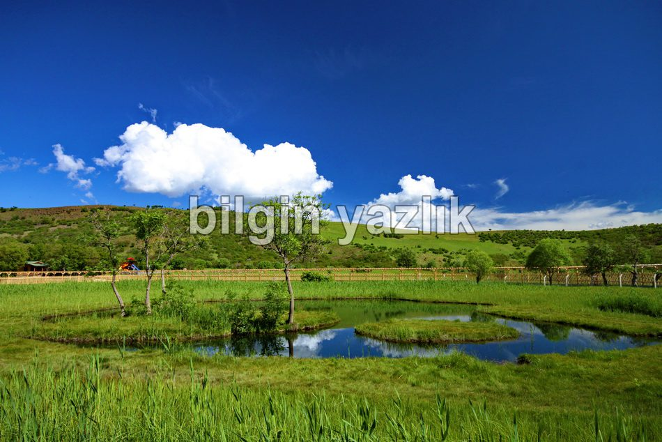
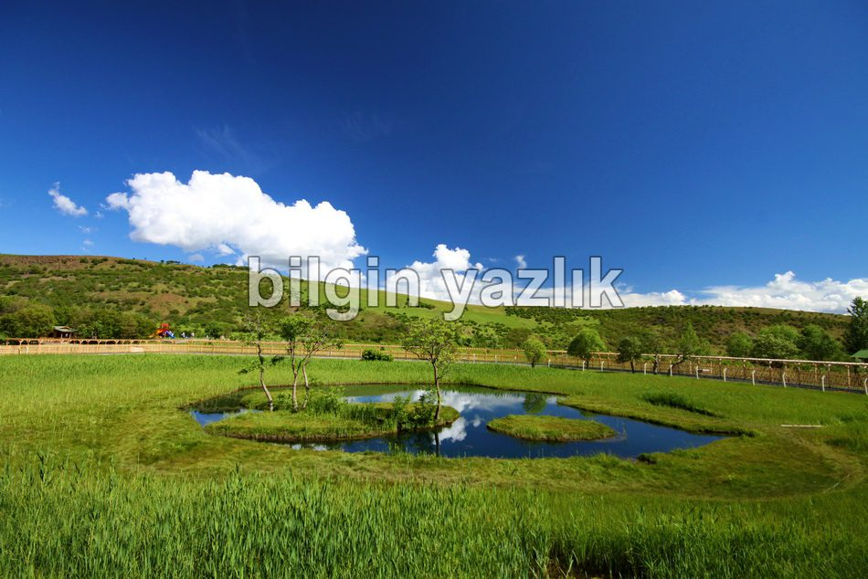
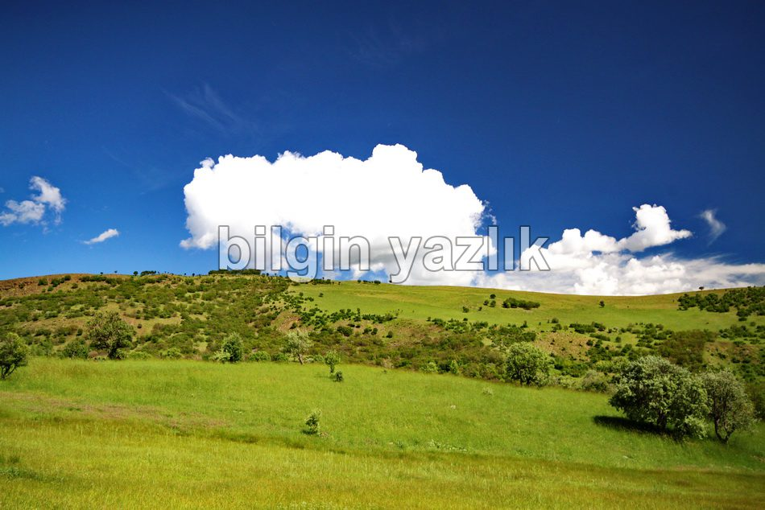

Yüzen Adalar
Bingöl ilinin Solhan ilçesine bağlı Hazarşah Köyü Aksakal Göl mezrasında yer almaktadır. Bingöl – Solhan karayolu üzerinden gidilmektedir. Şu sıralarda kalkınma ajansından alınan destek ile çevresi koruma altına alınmakta ve mesire alanı olarak düzenlenmektedir. Gördüğüm kadarı ile toplam 3 adet yüzen ada bulunuyor. Adalar su üzerinde serbest hareket ediyorlar ve adaların birinin üzerinde 2 adet ağaç bile var. Adaları anlamakta bile zorlanırken üzerlerinde yer alan ağaçların nasıl olup da canlı kaldıklarını anlayamadım. Mükemmel bir doğanın içerisinde yer alan adaları görmenizi muhakkak tavsiye ederim. Adaların bulunduğu alanda piknik yapmak için masa, oturma alanları, kamelyalar ve hatta çocuk oyun parkı bile var.



Bu yazı taliyol arşivinden taşınmıştır. · özgün kayıt